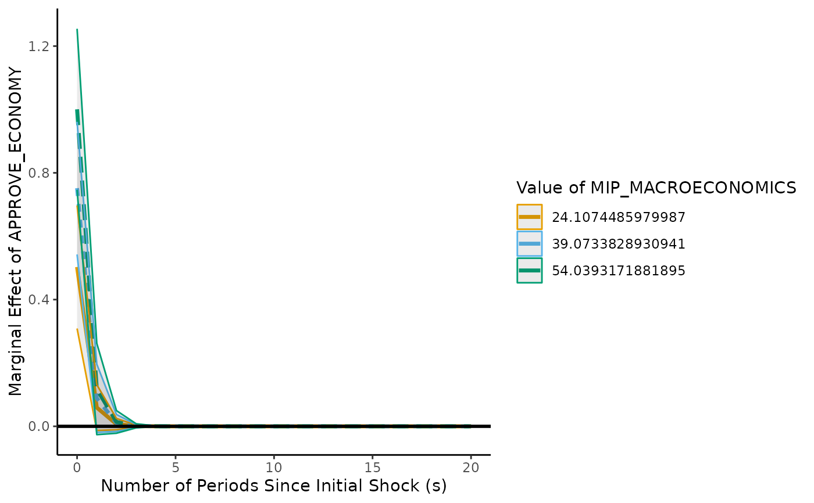

Plot the interaction in a single-equation time series model estimated via lm. It is imperative that you double-check you have referenced all x, y, z, and interaction terms through x.vrbl, y.vrbl, z.vrbl, and x.z.vrbl. You must also have their orders correctly entered. interact.adl.plot has no way of determining, from the variable list, which correspond with which
Source: R/tseffects.R
interact.adl.plot.RdPlot the interaction in a single-equation time series model estimated via lm. It is imperative that you double-check you have referenced all x, y, z, and interaction terms through x.vrbl, y.vrbl, z.vrbl, and x.z.vrbl. You must also have their orders correctly entered. interact.adl.plot has no way of determining, from the variable list, which correspond with which
Usage
interact.adl.plot(
model = NULL,
x.vrbl = NULL,
z.vrbl = NULL,
x.z.vrbl = NULL,
y.vrbl = NULL,
effect.type = "impulse",
plot.type = "lines",
line.options = "z.lines",
heatmap.options = "significant",
line.colors = "okabe-ito",
heatmap.colors = "Blue-Red",
z.vals = NULL,
s.vals = c(0, "LRM"),
z.label.rounding = 3,
z.vrbl.label = names(z.vrbl)[1],
dM.level = 0.95,
s.limit = 20,
se.type = "const",
return.data = FALSE,
return.plot = TRUE,
return.formulae = FALSE,
...
)Arguments
- model
the
lmmodel containing the ADL estimates- x.vrbl
named vector of the “main” x variables and corresponding lag orders in the ADL model
- z.vrbl
named vector of the “moderating” z variables and corresponding lag orders in the ADL model
- x.z.vrbl
named vector with the interaction variables and corresponding lag orders in the ADL model. IMPORTANT: enter the lag order that pertains to the “main” x variable. For instance, x_l_1_z (contemporaneous x times lagged z) would be 0 and l_1_x_z (lagged x times contemporaneous z) would be 1
- y.vrbl
named vector of the (lagged) y variables and corresponding lag orders in the ADL model
- effect.type
whether impulse or cumulative effects should be calculated.
impulsegenerates impulse effects, or short-run/instantaneous effects specific to each period.cumulativegenerates the accumulated, or long-run/cumulative effects up to each period (including the long-run multiplier). The default isimpulse- plot.type
whether to feature marginal effects at discrete values of s/z as lines, or across a range of values through a heatmap. The default is
lines- line.options
if drawing lines, whether the moderator should be values of z (
z.lines) or values of s (s.lines). The default isz.lines- heatmap.options
if drawing a heatmap, whether all marginal effects should be shown or just statistically significant ones. (Note: this just sets the insignificant effects to the numeric value of 0. If the middle value of your scale gradient is white, these will effectively “disappear.” If another gradient is used, they will take on the color assigned to 0 values.) The default is
significant- line.colors
what color lines would you like for line plots? This defaults to the color-safe Okabe-Ito (
okabe-ito) colors. There is also a grayscale option throughbw. Users can also include whatever colors they like. The number of colors must match the number of lines drawn. This is passed toscale_color_discrete- heatmap.colors
what color scale would you like for the heatmap? The default is
Blue-Red. Alternate colors must be one ofhcl.pals(). For grayscale plots, useGrays. This is passed toscale_fill_gradientn- z.vals
values for the moderating variable. If
plot.type = lines, these are treated as discrete levels of z. Ifplot.type = heatmap, these are treated as a lower and upper level of a range of values of z. If none are provided,interact.adl.plotwill pick- s.vals
values for the time since the shock. This is only used if
line.options = s.lines, meaning s is treated as the moderator. The default is 0 (short-run) and theLRM- z.label.rounding
number of digits to round to for the z labels in the legend (if those values are automatically calculated)
- z.vrbl.label
the name of the moderating z variable, used in plotting
- dM.level
significance level of the (cumulative) marginal effects, calculated by the delta method. The default is 0.95
- s.limit
an integer for the number of periods to determine the (cumulative) marginal effects (beginning at s = 0)
- se.type
the type of standard error to extract from the model. The default is
const, but any argument tovcovHCfrom thesandwichpackage is accepted- return.data
return the raw calculated (cumulative) marginal effects as a list element under
estimates. The default isFALSE- return.plot
return the visualized (cumulative) marginal effects as a list element under
plot. The default isTRUE- return.formulae
return the formulae for the (cumulative) marginal effects as a list element under
formulae(for the (cumulative) marginal effects) andbinomials(for the shock history). The default isFALSE- ...
other arguments to be passed to the call to plot
Examples
# Using Cavari's (2019) approval model
# Cavari's original model: APPROVE ~ APPROVE_ECONOMY + APPROVE_FOREIGN + MIP_MACROECONOMICS +
# MIP_FOREIGN + APPROVE_ECONOMY*MIP_MACROECONOMICS + APPROVE_FOREIGN*MIP_FOREIGN +
# APPROVE_L1 + PARTY_IN + PARTY_OUT + UNRATE +
# DIVIDEDGOV + ELECTION + HONEYMOON + as.factor(PRESIDENT)
approval$ECONAPP_ECONMIP <- approval$APPROVE_ECONOMY*approval$MIP_MACROECONOMICS
approval$FPAPP_ECONFP <- approval$APPROVE_FOREIGN*approval$MIP_FOREIGN
cavari.model <- lm(APPROVE ~ APPROVE_ECONOMY + APPROVE_FOREIGN + MIP_MACROECONOMICS +
MIP_FOREIGN + ECONAPP_ECONMIP + FPAPP_ECONFP +
APPROVE_L1 + PARTY_IN + PARTY_OUT + UNRATE +
DIVIDEDGOV + ELECTION + HONEYMOON + as.factor(PRESIDENT), data = approval)
# Now: marginal effect of X at different levels of Z
interact.adl.plot(model = cavari.model,
x.vrbl = c("APPROVE_ECONOMY" = 0), y.vrbl = c("APPROVE_L1" = 1),
z.vrbl = c("MIP_MACROECONOMICS" = 0), x.z.vrbl = c("ECONAPP_ECONMIP" = 0),
effect.type = "impulse", plot.type = "lines", line.options = "z.lines")
#> Warning: Variable names containing . replaced with _

# Use well-behaved simulated data (included) for even more examples,
# using the Warner, Vande Kamp, and Jordan general model
model.toydata <- lm(y ~ l_1_y + x + l_1_x + z + l_1_z +
x_z + z_l_1_x +
x_l_1_z + l_1_x_l_1_z, data = toy.ts.interaction.data)
# Marginal effect of z (not run: computational time)
# Be sure to specify x.z.vrbl orders with respect to x term
if (FALSE) interact.adl.plot(model = model.toydata, x.vrbl = c("x" = 0, "l_1_x" = 1),
y.vrbl = c("l_1_y" = 1), z.vrbl = c("z" = 0, "l_1_z" = 1),
x.z.vrbl = c("x_z" = 0, "z_l_1_x" = 1,
"x_l_1_z" = 0, "l_1_x_l_1_z" = 1),
z.vals = -2:2,
effect.type = "impulse",
plot.type = "lines",
line.options = "z.lines",
s.limit = 20)
# \dontrun{}
# Heatmap of marginal effects, since X and Z are actually continuous
# (not run: computational time)
if (FALSE) interact.adl.plot(model = model.toydata, x.vrbl = c("x" = 0, "l_1_x" = 1),
y.vrbl = c("l_1_y" = 1), z.vrbl = c("z" = 0, "l_1_z" = 1),
x.z.vrbl = c("x_z" = 0, "z_l_1_x" = 1,
"x_l_1_z" = 0, "l_1_x_l_1_z" = 1),
z.vals = c(-2,2),
effect.type = "impulse",
plot.type = "heatmap",
heatmap.options = "all",
s.limit = 20)
# \dontrun{}